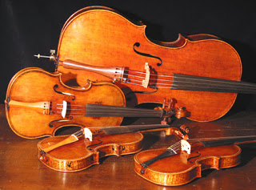

Sala classica
Ora facciamo un salto che va dalla scrittura all’anno del classicismo con la sua musica romantica.
Qui la musica assume un altro ed ulteriore aspetto, quello che tutt’oggi è considerata l’anima delle note la “sinfonia”.
Nel secolo d'oro della musica classica, si esprime in forme sempre più ricche ed elaborate, sia in campo strumentale che in campo operistico, sfruttando sempre più estesamente le possibilità espressive fornite dal sistema armonico e tonale costruito nei secoli passati.
La musica acquisì una coscienza storica al pari delle altre arti grazie agli studi e le pubblicazioni che riguardarono il passato. Questo nuovo fenomeno consentì di creare una saldatura tra il presente ed il passato e di dare continuità al percorso evolutivo musicale. Nel XVIII secolo vi fu la grande presenza di Mozart. Grazie a lui l'evoluzione della musica poggiò su un grande pilastro, che si estese in tutti i campi, sinfonia, opera, musica da camera, serenate, e che rappresentò il legame, tra la musica del Settecento (le sinfonie calme e serene, che rispecchiano alla perfezione gli schemi musicali, di Haydn) e quella romantica del XIX secolo.
Musica contemporanea
Queste innovazioni in campo tonale vennero radicalmente contestati dalla musica del XX secolo. In particolare, nel secondo decennio Arnold Schönberg, assieme agli allievi, tra cui ricordiamo Alban Berg e Anton Webern, giunse a delineare un nuovo sistema, la dodecafonia, basato su serie di 12 note. Alcuni ritennero questo l'inizio della musica contemporanea, spesso identificata con la musica d'avanguardia: altri dissentirono vivamente, cercando altre strade.
Il concetto di serie, inizialmente legato ai soli intervalli musicali, si svilupperà nel corso del secondo Novecento sino a coinvolgere tutti i parametri del suono.
Fu questa la fase del serialismo, il cui vertice fu raggiunto negli anni cinquanta con musicisti come Pierre Boulez e John Cage.
Altri musicisti - fra cui anche Igor Stravinsky, Bela Bartok e Maurice Ravel - scelsero di cercare nuova ispirazione nelle tradizioni folkloriche e nella musica extraeuropea, mantenendo un legame con il sistema tonale, ma innovandone profondamente l'organizzazione e sperimentando nuove scale, ritmi e timbri.